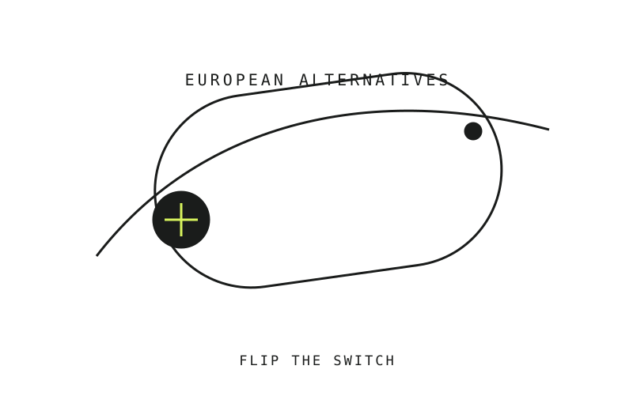
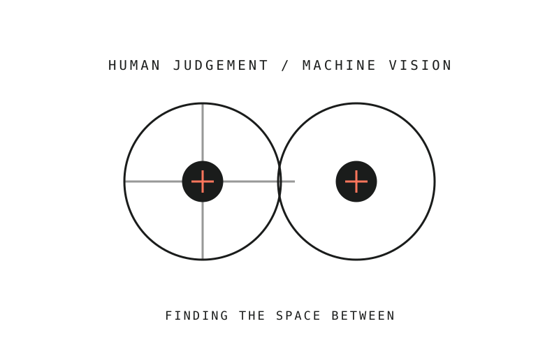
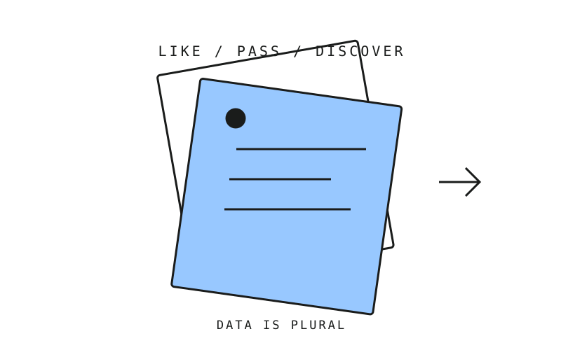

PhD Student
Human-AI Researcher @ AU & Gejst Studio
I’m a Cognitive Scientist and, at core, a radical optimist. I’m endlessly curious about how we interact with emerging technologies — and how friction might help us create more meaningful relationships with them.

Selected projects.

Digital sovereignty
BigSwitch.eu
A community-driven directory for GDPR-compliant, European-owned alternatives to Big Tech.
Privacy-first tool
Syntag.eu
A browser-based tool for adding AI disclosure labels to images, video, audio, PDFs and ZIP files without uploading them.

Cognitive science · ML
Human Things
Exploring whether human similarity judgements can improve machine-vision embeddings.

Data · Interaction
DataSwipe
A card-deck interface for finding datasets in the Data Is Plural archive.
The interesting part is always the space between.
I’m Sabrina, a Cognitive Scientist and, at core, a radical optimist. I’m endlessly curious about how we interact with emerging technologies. I love digging into complex problems, making sense of mess, and building things through code, communities and ideas.
I’ve come to learn that our engagement with frictionless technology may do us more harm than good — especially in our interactions with language models. My PhD, (Don’t) Make Me Think: Designing Reflective Friction to Regulate Epistemic Engagement and Reliance in LLM-Mediated Knowledge Work, explores how friction might serve a more meaningful interaction with technology.
I live with fibromyalgia, so my body is constantly receiving pain signals. It has taught me (and forced me) to pay attention to pace: when to keep going, and when to slow down. That is also part of why I’m interested in slowing down how we use AI. I worry about what frictionless systems can do to human cognition, and I think this is a critical moment in time when we need to work on this. Innovate new ways.
FIRST✳
Highlights.
PhD Student · Aarhus University
(Don’t) Make Me Think: designing reflective friction to regulate epistemic engagement and reliance in LLM-mediated knowledge work.
PhD Fellow · Gejst Studio
Research internship alongside the PhD, gathering empirical insights and data about how people work with emerging technology. Before this, I worked with Gejst as an AI Consultant (2025—26).
Research, teaching and facilitation
Research and teaching across cognitive science, robotics and social robotics; building tools for the EER art–science group and contributing to Apart Research.
Curriculum vitae
Full profile on LinkedIn ↗Group Facilitator · Aarhus University
IT-medarbejder · EER, Aarhus University
Research Assistant · Research Unit for Robophilosophy and Integrative Social Robotics
Teacher Assistant · Cognition and Communication
Head Tutor · Cognitive Science
MSc Cognitive Science · Aarhus University
BSc Cognitive Science · Aarhus University
Technical Gymnasium
Experience.
Full profile on LinkedIn ↗PhD Student · Aarhus UniversityJoint 4+4 PhD programme researching reflective friction, epistemic engagement and reliance in LLM-mediated knowledge work.
Human-AI Researcher · PhD Fellow · Gejst StudioInternship alongside the PhD, collecting empirical insights and data for the project.
AI Consultant · Gejst StudioEarlier experience working with the studio on AI-related questions, before moving into the PhD fellowship.
Group Facilitator · Aarhus UniversityFacilitating peer-to-peer drop-in group meetings for students with diagnoses at the Department of Linguistics and Cognitive Science.
IT-medarbejder · EER, Aarhus UniversityBuilding AI tools for Experimenting, Experiencing, Reflecting — an art–science collaboration led by Olafur Eliasson and Andreas Roepstorff.
Research Assistant · Robophilosophy & Social RoboticsResearch Unit for Robophilosophy and Integrative Social Robotics, Aarhus University.
Conference Staff · Aarhus UniversitySupporting the Research Unit for Robophilosophy and Integrative Social Robotics.
Research Assistant · Apart ResearchContributing to an AI-safety research community.
Teacher Assistant · Aarhus UniversityTeaching Cognition and Communication for Bachelor students in Cognitive Science.
Head Tutor · Cognitive SciencePlanning orientation week and the cabin trip for new Bachelor students.
Teacher Assistant · Aarhus UniversityTeaching Cognition and Communication for Bachelor students in Cognitive Science.
Communications Assistant · EUC Syd
Teacher Assistant · EUC SydAssisting teaching at the higher technical gymnasium and supporting students one-to-one.
Substitute Teacher · Aabenraa Friskole
Mentor · MentorDanmark
Student Teacher in Mathematics · SOSO SydProviding evening classes for students with dyscalculia and other mathematical challenges.
Student Representative · EUC SydMember of the management board for the Higher Technical Exam.
Education.
MSc Cognitive Science · Aarhus University
BSc Cognitive Science · Aarhus University
Technical Gymnasium · EUC Syd
Community & voluntary work.
Head Tutor · Cognitive ScienceVoluntary student leadership: planning orientation activities and a cabin trip for incoming Bachelor students.
Peer group facilitator · Aarhus UniversityFacilitating peer support and drop-in meetings for students with diagnoses.
Advisory Board Member · Aarhus TeaterContributing to conversations around art, culture and the city.
Volunteer · Headspace Denmark, AabenraaVolunteering with a youth organisation focused on mental health and wellbeing.
Chairperson · Cognitive Science & Linguistics Student CouncilPlanning meetings and study-related events, and acting as a link between students and the study community.
Tutor and Mentor · Aarhus UniversitySupporting incoming students and helping plan orientation activities.
Head of Marketing Communications · Campusbyen AabenraaVoluntary youth-community work focused on communication and local activities.
Slowdown.
Notes on human cognition, AI, pain, pace and the strange work of staying thoughtful in a fast-moving world.
Read the notes ↗Have a question,
an idea, or a strange problem?
Curious too? Send me a note — I love being curious with other curious beings.
szhsabrina@gmail.com ↗